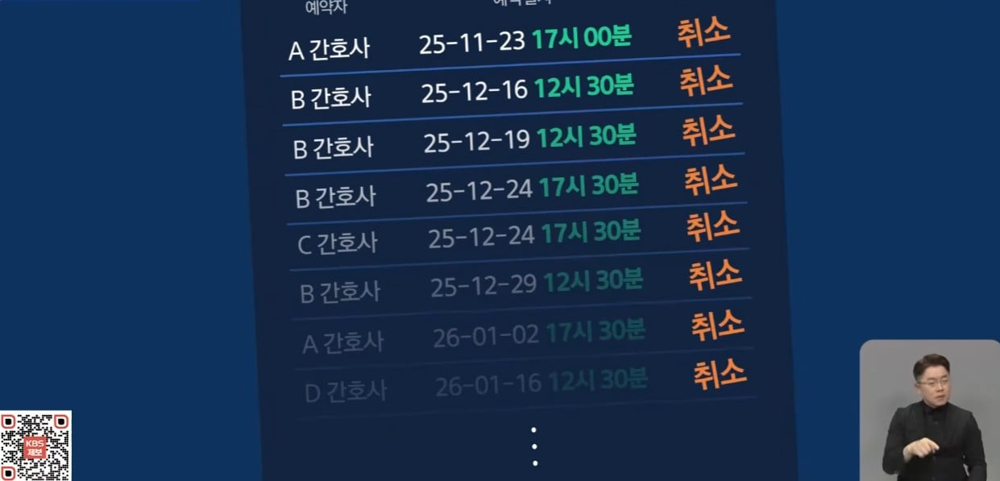
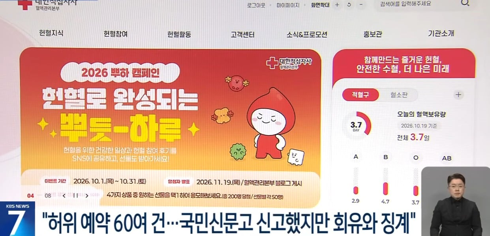
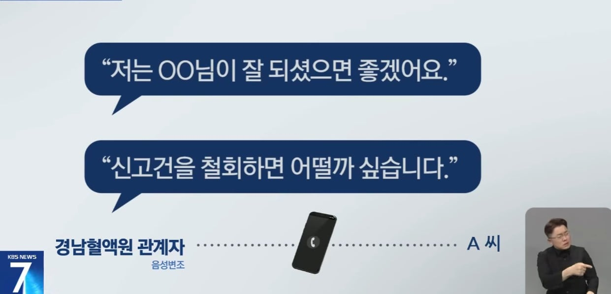
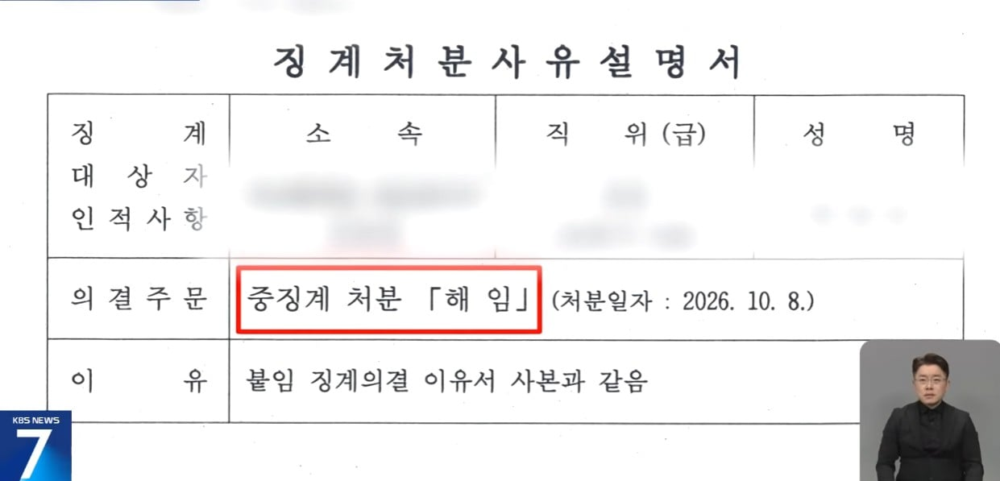
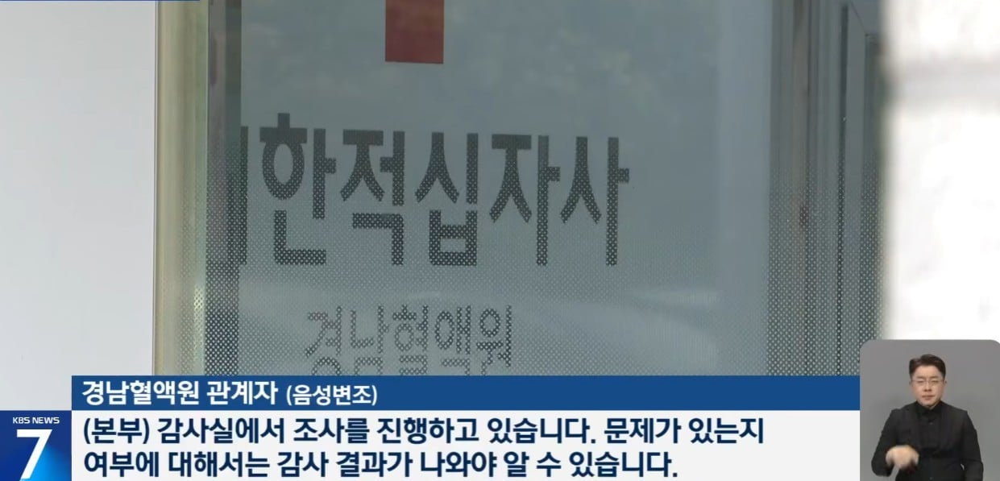
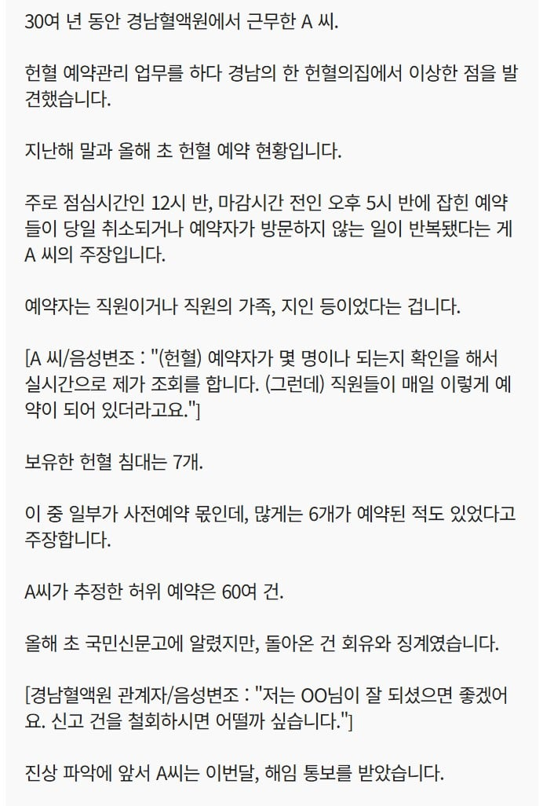

진짜 와 씨팔
신고한 사람을 짜르는 해결법 어디서 많이 봤는데
경남헌혈?
강남은 피가 많나보네
경남
헌혈의집에서 일하면 업무가
피 뽑는거 아님?
근데 점심시간, 퇴근시간 한타임씩
가라예약넣어서 시트 다 채워놓고
피 뽑기 싫으면 퇴사를 해야지
월급은 받고싶고 일은 하기 싫고??
그리고 저런 중대한 사안을 고발한 사람을
보호해주는게 아니라 해임??
적십자 자체가 문제일까
경남혈액원만 문제일까 ㅋㅋㅋ
수사기관에서 모든 헌혈의집
예약현황 전수조사 해가지고
업무방해로 빠따 갈겨야함
저게원인이 두가지인데 내가대학병원에 채혈실에있을대 단순히 접슈량만늘릴려고혹은 방문자수 늘릴랴고 번허표 몇개씩뽑아놓소집계에넣는건봄
낙하산이나 빽으로 들어온 사람이 있나보네
점심시간이나 퇴근전에 예약했다가 취소해서 놀다가겠다는건데 그동안 얼마나 대충대충 살았을까 ㅆㅂ
일하기 싫긴 해
이 나라에서는 장기기증이랑 헌혈, 정기기부는 할 필요가 없구만.
차라리 근처 보육원에 치킨 사서 기부 하는게 제일 나음.
칼퇴하려고 본인이나 가족들, 지인 예약 넣어놓고 직전에 취소하는 거네
엔딩이 K 엔딩이네..신고자가 해고라니
아니 A씨가 왜 쫒겨나 ㅋㅋㅋㅋ
경남 혈액원 관계자가
신고자를 짜른겨??
대체 왜??
한국적십자사. 자꾸 왜이러지?
신고당한 사람이 든든한 뒷배가 있네
신고한사람이 해임처리되는데 나라에서 아무것도 못해주면 니들이 세금을 왜받냐 진짜 나이먹을수록 세금이 왤케아깝지
적십자사 피팔아서 배불리는놈들 내가 절대 쟤네한 헌혈 안함
아 들켯다 ~ 대부분 사기업아닌데들 예약받는데들이 다 저럴텐데
저기만 일단 걸린듯 ㅋㅋㅋㅋ
K 잔머리는 세계최고지
저러니까 시스템이 빡빡해지고 발전할수밖에 . 역시 선진국
좆십자 이 십새들도 만만찮은 씹새들인디…
신고자를 해임한 방법이 오히려 더 궁금한데? 어떻게 사람을 자른거지?
역시 부정에 동의하지 않는 이를 짜르는 건 유구한 전통이냐고 ㅅㅂ
이건 징계위원회 전원 해임감 아니냐
내가 잘못 읽은 줄 알고 다시 읽었다.
신고자가 해임된거네... 어처구니가 없다
와시발ㅋㅋㅋ
신고자 해임은 시발ㅋㅋ
또 강남인줄 알았네
장난하냐? 신고한 사람을 해임해?